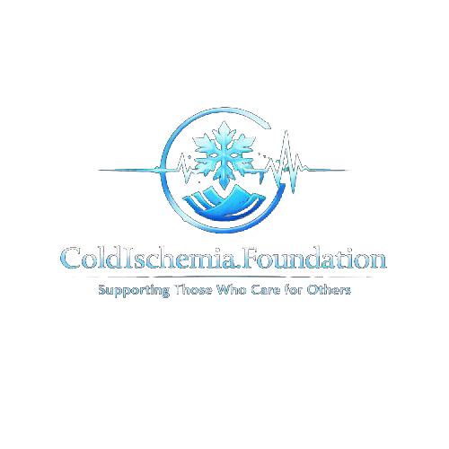

The Living Kidney Donor’s Field Guide to Law, Risk, Money and Conscience in America
For people considering giving a kidney while alive — and for the people who love them

Independent · No donations · No industry fundingEducational only. Not medical advice. In an emergency, call 911.The Living Kidney Donor’s Field Guide to Law, Risk, Money and Conscience in America
An honest assessment of the living-donor ecosystem: its law and its money, its medicine, its psychology, and the community that carries the people inside it
Ellenton, Florida
coldischemia.foundation
Not a Spare — Short Version, October 2026.
© 2026 Cold Ischemia Foundation, Ellenton, Florida.
Free to read and share. Please keep it whole and credit the Foundation.
The Cold Ischemia Foundation does not accept donations and takes no funding from drug, biologic, medical-device or pharmaceutical companies, dialysis organizations, insurers, hospital systems, or advocacy organizations funded by them.
For the ones who gave and were never asked how they were afterward.
And for the ones still waiting.
The Cold Ischemia Foundation is a patient-led advocacy organization. Our authors are advocates, writers and researchers. We are not doctors, nurses, attorneys or financial advisors, and nothing in this guide is medical, legal, tax or financial advice. It will not tell you whether you are healthy enough to donate, whether you should donate, or how to treat any condition.
For medical advice, talk to your own healthcare team. That means your primary-care clinician and, if you are being evaluated, the transplant program’s physicians, nurses, social workers and your independent living donor advocate. Ask them anything this guide raises. Bring it with you and write in the margins.
Laws, policies and statistics change. Verify anything you rely on at the primary sources listed in Appendix C. The scenes that open each chapter are invented composites. This edition has not yet been reviewed by a physician or an attorney.
It is two in the morning and you are awake, typing a question you have not said out loud: can a healthy person give a kidney? Maybe someone you love is on dialysis. Either way, you are standing somewhere specific, and a good decision starts by naming it.
You are standing in a year. In 2026, roughly 95,500 Americans are waiting for a kidney, a number that has barely moved in a generation. Most are tied to a dialysis machine for about four hours, three days a week. Kidney failure is the one organ failure that medicine can postpone, and the postponement is a life lived around an appointment.
You are standing in a place. Which transplant center is near you, whether your state offers donors a tax credit, whether your employer must give you leave: all of it changes with your zip code and your paycheck.
And you are standing in a body you have never had to think about. A living donor does what almost nothing else in medicine asks of a healthy adult: accepts a real, permanent, small risk, with no health benefit to themselves, for someone else. That is why everything here rests on one word. Free. A free and fully informed yes.
To you, donation will feel like a string of appointments. From above, it is a system with a federal center of gravity and no single owner. The transplant program evaluates you. A required, independent living donor advocate exists only to protect your interests. A national network writes the matching and safety rules; two federal agencies oversee it and certify the hospitals. Congress wrote the founding law, and your state writes the tax credits and leave protections. Insurers, usually through the recipient’s coverage, pay the bills. A few large companies run most of American dialysis. Paired-exchange registries let incompatible pairs trade, so that a chain can begin with one stranger.
Each actor has a job and an incentive, and the incentives are worth a question. A transplant ends a patient’s time on dialysis, which is good for the patient and, for a dialysis company, a lost source of revenue. A hospital wants more transplants, which is good, unless it becomes pressure to hurry a donor. If you remember one sentence from this section, make it this: the person who carries the most risk has the least institutional voice. This guide exists to hand you some of that voice.
Here is what you will hear, and what it leaves out. In 2025 the United States performed 49,064 transplants, including 6,521 kidneys from 7,237 living donors.
The risks are small, and they are not zero. Studies put the chance of dying around the operation at about three in ten thousand. Over fifteen years, roughly 31 in ten thousand donors developed kidney failure, compared with about four in ten thousand matched people who did not donate. Most donors never do. But “most” is not a comfort to the one who does, which is why the right question is not “is it safe?” but “what is my number, and who will tell me the truth about it?” Ask your program for yours, and for its own outcomes.
Federal law forbids paying for an organ, so you cannot be compensated for the kidney. It does not forbid reimbursing your costs, and this is where donors are most often surprised. The recipient’s insurance typically covers your evaluation and surgery. It does not necessarily cover lost wages, travel, childcare or a bad month. A federally funded program can reimburse some travel and lodging for eligible donors, but you generally have to apply before you incur the cost.
Then there is your job and your coverage. The Family and Medical Leave Act may protect unpaid leave, if your employer and your tenure qualify. Many states add their own protections or tax credits; many do not. Living donors have no uniform federal shield against being rated differently for life, disability or long-term care insurance, and bills to change that have been introduced repeatedly. If you can, secure your coverage and your leave in writing before your evaluation, not after.
Finally, the follow-up. Programs must report donor data for two years. After that, the promise thins, and the long tail of a donor’s life is largely unmonitored. Ask what yearly checks you should keep, and who will pay for them. A system that depends on your generosity owes you more than a handshake and a pamphlet.
Under the paperwork, this decision is about three old subjects, and no evaluation form asks about them.
Death. You are asked to accept a small risk of dying and a bigger risk of living differently. The statistics reassure, but the mind does not weigh three in ten thousand like a spreadsheet; it weighs it against the people who depend on you. Psychologists note that when we are reminded of mortality, we cling to our values and our tribes, and sometimes to rescue fantasies. A decision made in a hospital hallway the week of a diagnosis deserves a second look in daylight.
Meaning. Most donors call it the most meaningful thing they have done, and most say they would do it again. But if your sense of self depends on being the one who gives, a failed crossmatch or a medical exclusion can feel like erasure.
Belonging. Families are the main source of donors, and the main source of quiet pressure: the plea, the joke, the long silence at the holiday table. This is why you have the right to say no, and to withdraw at any stage, without the recipient learning that you changed your mind. You can love someone and still decline. You can say yes and still be afraid. A good decision is not a brave one. It is a free one.
Four questions to carry outside: Would I still do this if no one ever knew? What exactly am I afraid of? How will I feel if the recipient does not do well? Who will care for me, and will I ask?
The popular story of donation is a lone act of courage. The honest story is a logistics problem solved by many hands. Someone drives. Someone cooks. Someone reads the insurance letter at the table and says, “wait, what does this paragraph mean?” The donors who do best are rarely the ones with the best surgeon. They are the ones with the best circle.
Build yours with five roles: an Anchor who comes to the evaluation and takes notes; a Navigator who tracks insurance, leave and reimbursements; a Steward who runs daily life during recovery; a Witness, ideally a former donor, who will tell you the truth, including “you do not have to do this”; and a Voice who will speak for you when you cannot. Hold it together with four rules: trust earned in small things, transparency about money and fear, reciprocity without scorekeeping, and an exit that never costs you your place. Ask your program to connect you with someone who donated at least two years ago, because the first month tells you about the surgery and the third year tells you about the life.
Take the time you need. The person on the waiting list lives in urgent time; you are asked to decide in human time, and a good process refuses to let the first clock bully the second. If anyone tells you that you must decide this week, ask who benefits from the rush.
Who is my independent living donor advocate, and can I reach them privately? What are this program’s own donor outcomes? What will I owe, and what can be reimbursed in advance? What follow-up will I get after two years? Can I speak with a donor who gave years ago?
We take no position on whether you should donate. We take a firm position on how the decision should be made, and on what a person who makes it is owed. You now know where you are, who else is in the room, and what to ask. Read it twice, slowly. Come back and tell us what we got wrong. Nobody should do this alone.
— Cold Ischemia Foundation
“You can love someone and still say no. You can say yes and still be afraid. A good decision is not a brave one; it is a free one.”
This guide treats a possible living kidney donor as an adult, a citizen and a member of a community. It maps the system, explains the law, tells the truth about the numbers, takes the psychology seriously, and shows you how to build a circle of people who will carry you through.
We are not medical experts. For medical advice, talk to your healthcare team. In an emergency, call 911. In emotional crisis, call or text 988.
coldischemia.foundation